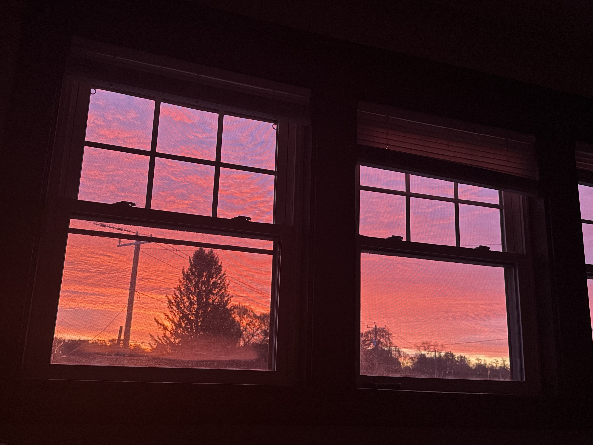
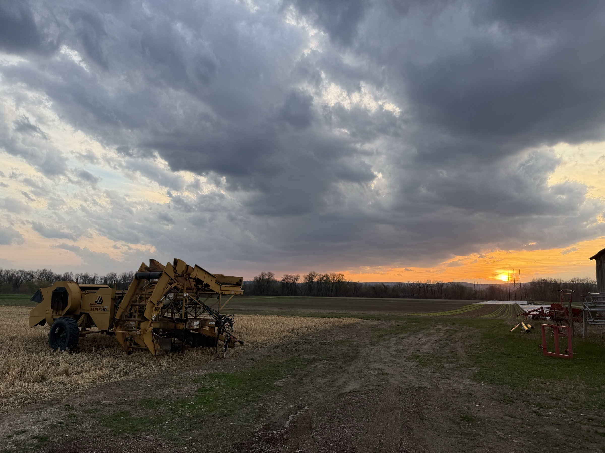

Research
Public case records, 2002 to 2026. The point is to compare one record with thousands of others.
Sample sentence
The shape of one of those records. The fields are what get compared.
On , the announced charges. Investigators said the activity migrated from to a . The defendant had a and later in federal court.
Pick a marked phrase. The rule that caught it shows up here.
Work
-
Affordances for Harm
How offenders misuse platform capabilities to exploit children, and where to intervene. Preprint, 2026. 30 primary federal cases from PACER, instantiated and analyzed as state machines.
-
CaseLinker
Aggregates, structures, analyzes, and visualizes public enforcement records involving ICAC and online exploitation. Open source, 2026. The current release includes 10,282 public reports, 125,891 extracted features, 4,137 agencies, and 56 sources, with no PII processed in accordance with UMass HRPO NHSR Determination #7668 and 45 CFR 46.102(f)(1), (2).
-
Who's Watching You Zoom?
Privacy of third-party Zoom apps. PETS 2025, with Saharsh Goenka, Adit Prabhu, Payge Sakurai, and Prof. Rakibul Hasan. More than 97,000 marketplace snapshots.
-
Ontology
AffordanceMisuse and a spine-level ConditioningPhase, merged into the CAC Ontology. Trajectories extension on the CASE/UCO SDK, pull request 135, open.
-
Earlier
DriverAI, summer 2025. Android authentication and encryption: SQLCipher, Play Integrity, AES on Room, JWT with Firebase Auth and AWS Cognito.
Capstone with General Dynamics Mission Systems. Ultra-wideband boards for bidirectional data, two semesters at Arizona State.
Pictures


